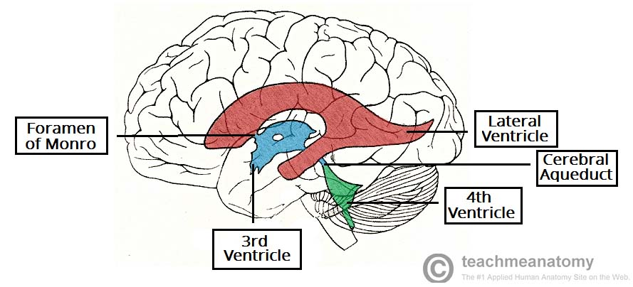
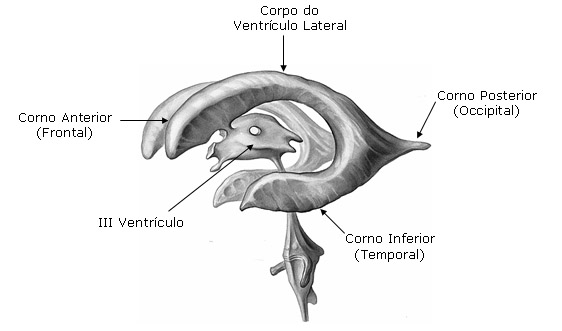
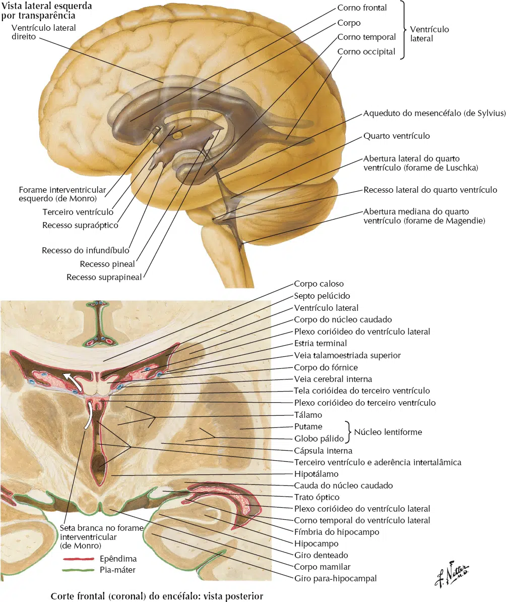
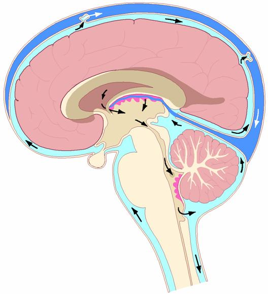
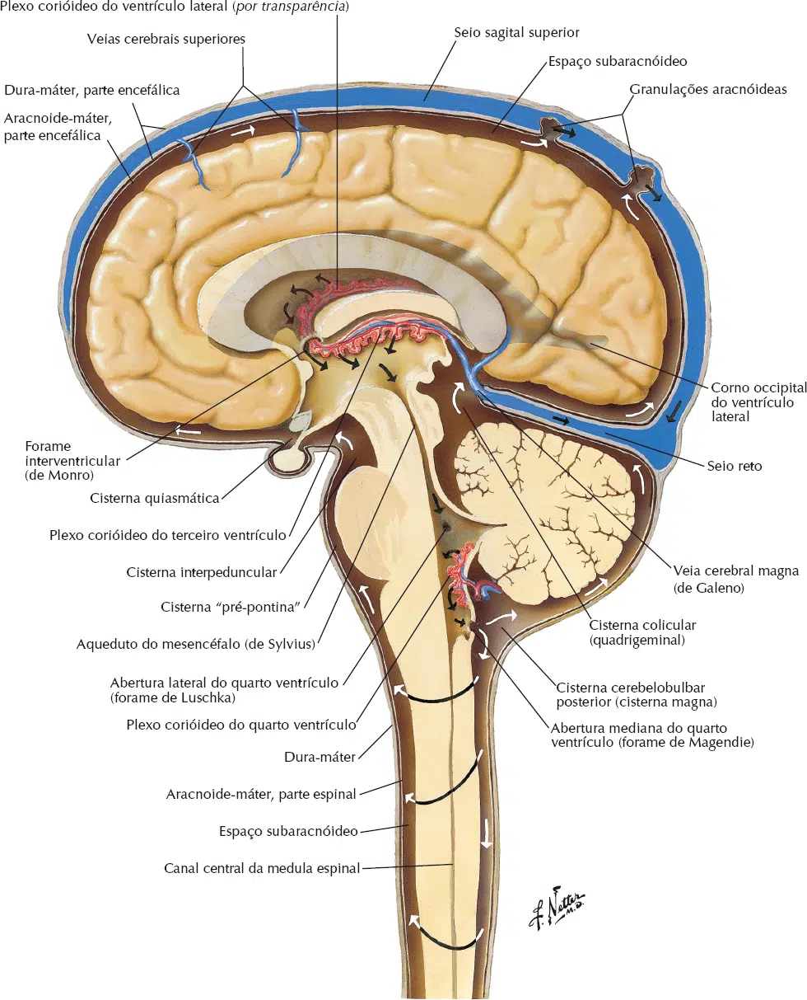

Os ventrículos são dilatações do canal do tubo neural.
São quatro ventrículos encefálicos:
Ventrículo lateral direito, ventrículo lateral esquerdo, IIIº ventrículo e IVº ventrículo.
No interior dos ventrículos está o plexo corióide, produtor do líquido cereberospinal.

Ventrículos laterais: são cavidades em forma de letra C, localizadas no telencéfalo.
Cada ventrículo lateral é constituído por cinco partes: corno frontal, corno occipital, corno temporal, parte central e o átrio.
Geralmente o ventrículo lateral esquerdo é maior que o direito.
No assoalho do ventrículo lateral está o plexo corióideo.
Corno frontal do ventrículo lateral: está localizado anteriormente ao forame interventricular (comunicação do ventrículo lateral com o IIIº ventrículo).
A parede medial é formada pelo septo pelúcido; parede lateral formada pela cabeça do núcleo caudado, as paredes anterior e superior formadas pelo joelho do corpo caloso e, a parede inferior formada pelo rostro do corpo caloso.
O corno frontal não apresenta plexo corióide.
Corno temporal do ventrículo lateral: atravessa o lobo temporal.
Próximo a sua parede medial está a cauda do núcleo caudado.
O corpo amigdalóide forma uma saliência na porção anterior do corno temporal.
Suas paredes inferior e medial se relacionam com o hipocampo.
Corno occipital: projeta-se para o lobo occipital, geralmente é maior no lado esquerdo.
Parte central e átrio do ventrículo lateral: o corpo estende-se inferiormente ao tronco do corpo caloso.
Medialmente é limitado pelo septo pelúcido.
O átrio é a expansão do ventrículo lateral na junção entre a parte central, corno temporal e corno occipital.

IIIº ventrículo: é uma cavidade mediana estreita, localizada no diencéfalo.
Comunica-se com os ventrículos laterais por meio dos forames interventriculares e, com o IVº ventrículo pelo aqueduto do mesencéfalo.
O assoalho do IIIº ventrículo estende-se do quiasma óptico até a abertura do aqueduto do mesencéfalo.
As paredes laterais são formadas pelas faces medias dos tálamos.
A parede posterior é formada pelo epitálamo.
A tela corióidea (com o plexo corióideo) forma o teto do IIIº ventrículo.
IVº ventrículo: cavidade que se comunica com o espaço subaracnóideo.
Está localizado entre o tronco encefálico (bulbo e ponte anteriormente) e o cerebelo (posteriormente).
O assoalho do IVº ventrículo é a fossa rombóidea.
O teto é formado pelo véu medular superior, nódulo do cerebelo, véu medular inferior e a tela corióidea.

O líquido cerebrospinal é incolor, ocupando o espaço subaracnóideo.
O indivíduo adulto contém cerca de 120 a 150 ml de líquido cerebrospinal.
A produção liquórica é constante, realizada pelo epêndima dos plexos corióideos (localizados no assoalho dos ventrículos laterais e tetos dos IIIº e IVº ventrículos), cerca de 500 ml por dia.
Dos ventrículos laterais, o líquido cerebrospinal flui para o IIIº ventrículo pelos forames interventriculares (“Monro”), posteriormente passa para o IVº ventrículo pelo aqueduto do mesencéfalo (“de Sylvius”).
No IVº ventrículo, o líquido cerebrospinal flui para o espaço subaracnóideo medular, por meio de três aberturas: uma abertura mediana (“de Mangendie”), e duas aberturas laterais (“de Luschka”).
Nesse ponto, o liquido cerebrospinal preenche todo o espaço subaracnóideo medular e encefálico, preenchendo as cisternas do encéfalo e a cisterna lombar (medular).
A absorção do líquido cerebrospinal ocorre nas granulações aracnóideas.

